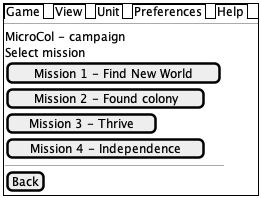

GUI - structure and behavior
Here is described class composition of game GUI and it's behavior.
GUI structure
For most of panels is used Model view presenter (MVP). It's described at http://www.g-widgets.com/2016/01/19/introduction-to-the-mvp-pattern-in-gwt/.
Class MainStageBuilder
After game start GUI is builded in class org.microcol.gui.MainStageBuilder. In this class are composed classes and org.microcol.gui.mainmenu.MainMenuView and org.microcol.gui.MainPanelViewin on view. On screen it look like:
+--------------------------------------------+ | MainMenuView | +--------------------------------------------+ | | | | | | | MainPanelView | | | | | | | | | | | | | | | | | +--------------------------------------------+
Class MainPanelView
This class hold whole game. Design pattern in used for this view is MVP. So there is also class MainPanelPresenter. Class MainPanelView mainly it switch between three views.
- MainGamePanelView - Contains played game. It's described in next chapter. Game itself is inside this frame. MainPanel have following structure:
+---------------------------------+----------+ | | | | | | | | | | GamePanel | RighPanel| | | | | | | | | | | | | | | | | | | +---------------------------------+----------+
Game panel contains game.
- GameMenuPanelView - Shows list of basic options.
Start panel just show simple options like "start new game" and "close application". It look like:
- CampaignPanelView - contains menu with default campaign.
It show missions and allows user select mission to play.

GUI behavior
Diagram describes main screen flow when game starts. There are some additional behavior rules:
- When user finish one mission next one is automatically started.
- When last mission is finished than game menu is shown.
- When user choose "Exit Game" from main menu than game menu is shown.
Screen flow is depicted here:
Game Menu panel
When user look at game menu just some buttons are enabled. It controlled in a following way:
Unit and tile selecting events
There are events:
- TileWasSelectedEvent - Is fired when new tile is selected by SelectedTileManager. Event hold information if screen should smoothly scroll at selected tile or screen should jump at selected tile or do nothing.
- UnitWasSelectedEvent - Holds info about selected tile and selected unit. Is fired by SelectedUnitManager. Hold reference to selected unit. Event is fired event when unit is deselected. For example player focus location without any units.
This event are raised in following scenarios in following order:
- User click at unit. - When user click than tile should be selected. If there are some unit that could move than first such unit is selected. So called events are:
- TileWasSelectedEvent - tile is selected but screen don't center at this tile.
- UnitWasSelectedEvent - just when there is selected unit
- User click at unit with key modifier e.g. ⌘. - Same as previous case but when tile is selected than screen scroll to put selected tile to the center.
- User choose specific unit from unit at already selected tile - Just event UnitWasSelectedEvent is raised.
- Focused unit is moved to city field. - Class SelectedUnitManager should be called and it fire event UnitWasSelectedEvent. When there is another unit that could be selected than this unit is selected otherwise selected unit is set to null.
- Focused unit is destroyed. - Tile stay selected but UnitWasSelectedEvent is raised with selected unit set to null.
Unsorted mess follows.